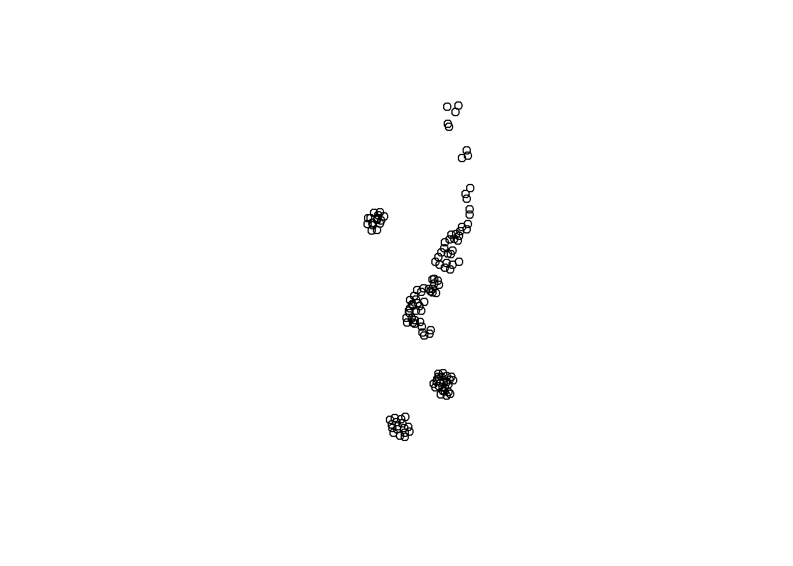

Code
# install.packages(c("sf", "tidyverse", "leaflet"))A GeoPackage (.gpkg) is an open, standards-based file format for geospatial information. It as a versatile that can hold multiple layers of vector features (points, lines, polygons), raster imagery, and even non-spatial tables. Its self-contained nature makes it an excellent format for data distribution and archival.
This document provides a guide for curators and researchers on how to programmatically inspect, read, and visualize the contents of a .gpkg file using R. It also suggests powerful external tools for deeper visual exploration.
This workflow relies on the sf (Simple Features) package, which is the modern standard for working with vector geospatial data in R. For enhanced visualization, we will also use the leaflet package.
If you don’t have these packages installed, run this command once in your R console:
# install.packages(c("sf", "tidyverse", "leaflet"))This chunk loads the necessary libraries for the session.
library(sf)
library(tidyverse)
library(leaflet)Using common R functions allow us to undertand the overall structure of the data
summary() for statistical overviewsThe summary() function provides a statistical summary for each column in your data frame. For numeric columns, it calculates key statistics like mean, median, and range. For text or categorical columns, it shows the length and class. It also gives a summary of the geometry column, including its type and bounding box.
file_path <- params$file_path
gpkg_data <- st_read(file_path )Multiple layers are present in data source D:\Alliance\FRDR\Curation\2024\974\Files\Vector\20230605_cbblackburn1_p1.gpkg, reading layer `20230605_cbblackburn1_p1_labels_points'.
Use `st_layers' to list all layer names and their type in a data source.
Set the `layer' argument in `st_read' to read a particular layer.Reading layer `20230605_cbblackburn1_p1_labels_points' from data source
`D:\Alliance\FRDR\Curation\2024\974\Files\Vector\20230605_cbblackburn1_p1.gpkg'
using driver `GPKG'
Simple feature collection with 132 features and 18 fields
Geometry type: POINT
Dimension: XY
Bounding box: xmin: 292353.3 ymin: 5368043 xmax: 292399.8 ymax: 5368193
Projected CRS: WGS 84 / UTM zone 19Nsummary(gpkg_data) plot class_code scientific_name taxon_id
Length:132 Length:132 Length:132 Length:132
Class :character Class :character Class :character Class :character
Mode :character Mode :character Mode :character Mode :character
planted_natural instrument height1_no_shoot_cm height2_no_shoot_cm
Length:132 Length:132 Min. : 0.0 Min. : 0.0
Class :character Class :character 1st Qu.: 0.0 1st Qu.: 0.0
Mode :character Mode :character Median : 0.0 Median : 0.0
Mean :119.9 Mean :122.6
3rd Qu.:261.8 3rd Qu.:271.2
Max. :400.0 Max. :430.0
height3_no_shoot_cm total_height1_cm total_height2_cm total_height3_cm
Min. : 0.0 Min. :108.0 Min. : 0.0 Min. : 0.0
1st Qu.: 0.0 1st Qu.:220.0 1st Qu.: 0.0 1st Qu.: 0.0
Median : 0.0 Median :290.0 Median :182.5 Median :189.5
Mean :121.8 Mean :293.4 Mean :168.9 Mean :169.2
3rd Qu.:271.2 3rd Qu.:350.0 3rd Qu.:326.2 3rd Qu.:322.5
Max. :430.0 Max. :490.0 Max. :510.0 Max. :500.0
diameter_type diameter1_mm diameter2_mm diameter3_mm
Length:132 Min. : 0.00 Min. : 0.00 Min. : 0.00
Class :character 1st Qu.: 20.00 1st Qu.: 0.00 1st Qu.: 0.00
Mode :character Median : 33.50 Median :10.52 Median :11.00
Mean : 35.04 Mean :20.94 Mean :20.76
3rd Qu.: 47.25 3rd Qu.:41.50 3rd Qu.:42.29
Max. :109.00 Max. :74.00 Max. :73.00
comments date_mesured geom
Length:132 Length:132 POINT :132
Class :character Class :character epsg:32619 : 0
Mode :character Mode :character +proj=utm ...: 0
head() to preview rowsThe head() function displays the first few rows (six, by default) of your data frame.
head(gpkg_data)Simple feature collection with 6 features and 18 fields
Geometry type: POINT
Dimension: XY
Bounding box: xmin: 292365.1 ymin: 5368043 xmax: 292372.4 ymax: 5368046
Projected CRS: WGS 84 / UTM zone 19N
plot class_code scientific_name taxon_id
1 601 piba Pinus banksiana https://www.gbif.org/species/5285533
2 601 piba Pinus banksiana https://www.gbif.org/species/5285533
3 601 piba Pinus banksiana https://www.gbif.org/species/5285533
4 601 piba Pinus banksiana https://www.gbif.org/species/5285533
5 601 piba Pinus banksiana https://www.gbif.org/species/5285533
6 601 piba Pinus banksiana https://www.gbif.org/species/5285533
planted_natural instrument height1_no_shoot_cm height2_no_shoot_cm
1 planted laser 330 370
2 planted laser 300 330
3 planted laser 320 330
4 planted laser 380 360
5 planted laser 250 250
6 planted laser 267 275
height3_no_shoot_cm total_height1_cm total_height2_cm total_height3_cm
1 340 400 420 400
2 310 360 380 370
3 320 380 380 370
4 320 430 420 430
5 240 290 300 300
6 275 285 325 300
diameter_type diameter1_mm diameter2_mm diameter3_mm
1 dbh 53 53 54
2 dbh 47 48 46
3 dbh 60 59 63
4 dbh 52 60 64
5 dbh 32 33 32
6 dbh 55 67 60
comments
1 <NA>
2 <NA>
3 <NA>
4 node close to dbh
5 <NA>
6 Tree fallen but alive. Dbh taken on horizontal height. height taken in horizontal for carbon calculs. Vertical total height is height 1 195 cm height 2 200 cm height 3 185 cm
date_mesured geom
1 Sat, 29 Jul 2023 19:00:14 GMT POINT (292370.1 5368043)
2 Sat, 29 Jul 2023 18:11:00 GMT POINT (292368 5368043)
3 Sat, 29 Jul 2023 18:07:36 GMT POINT (292365.1 5368044)
4 Sat, 29 Jul 2023 18:56:52 GMT POINT (292370.2 5368045)
5 Sat, 29 Jul 2023 18:53:11 GMT POINT (292372.4 5368045)
6 Sat, 29 Jul 2023 18:24:08 GMT POINT (292366.7 5368046)str() for data structureThe str() (structure) function provides a high-level overview of the file. It list the total number of observations (rows) and variables (columns), and then lists each column’s name, its data type (e.g., num for numeric, chr for character), and the first few data entries.
str(gpkg_data)Classes 'sf' and 'data.frame': 132 obs. of 19 variables:
$ plot : chr "601" "601" "601" "601" ...
$ class_code : chr "piba" "piba" "piba" "piba" ...
$ scientific_name : chr "Pinus banksiana" "Pinus banksiana" "Pinus banksiana" "Pinus banksiana" ...
$ taxon_id : chr "https://www.gbif.org/species/5285533" "https://www.gbif.org/species/5285533" "https://www.gbif.org/species/5285533" "https://www.gbif.org/species/5285533" ...
$ planted_natural : chr "planted" "planted" "planted" "planted" ...
$ instrument : chr "laser" "laser" "laser" "laser" ...
$ height1_no_shoot_cm: num 330 300 320 380 250 267 300 390 350 340 ...
$ height2_no_shoot_cm: num 370 330 330 360 250 275 330 390 370 340 ...
$ height3_no_shoot_cm: num 340 310 320 320 240 275 310 390 360 340 ...
$ total_height1_cm : num 400 360 380 430 290 285 370 440 420 370 ...
$ total_height2_cm : num 420 380 380 420 300 325 370 450 430 400 ...
$ total_height3_cm : num 400 370 370 430 300 300 390 430 420 400 ...
$ diameter_type : chr "dbh" "dbh" "dbh" "dbh" ...
$ diameter1_mm : num 53 47 60 52 32 55 56 69 67 60 ...
$ diameter2_mm : num 53 48 59 60 33 67 56 64 64 56 ...
$ diameter3_mm : num 54 46 63 64 32 60 59 67 60 54 ...
$ comments : chr NA NA NA "node close to dbh" ...
$ date_mesured : chr "Sat, 29 Jul 2023 19:00:14 GMT" "Sat, 29 Jul 2023 18:11:00 GMT" "Sat, 29 Jul 2023 18:07:36 GMT" "Sat, 29 Jul 2023 18:56:52 GMT" ...
$ geom :sfc_POINT of length 132; first list element: 'XY' num 292370 5368043
- attr(*, "sf_column")= chr "geom"
- attr(*, "agr")= Factor w/ 3 levels "constant","aggregate",..: NA NA NA NA NA NA NA NA NA NA ...
..- attr(*, "names")= chr [1:18] "plot" "class_code" "scientific_name" "taxon_id" ...Also, a single .gpkg file can contain many layers. Before reading any data, the first step is to inspect the file to see what it holds. The st_layers() function lists all available layers without loading them into memory.
# Get the file path from the document's parameters
file_path <- params$file_path
# List all layers within the GeoPackage file
st_layers(dsn = file_path)Driver: GPKG
Available layers:
layer_name geometry_type features fields
1 20230605_cbblackburn1_p1_labels_points Point 132 18
2 20230605_cbblackburn1_p1_labels_masks Polygon 1865 3
crs_name
1 WGS 84 / UTM zone 19N
2 WGS 84 / UTM zone 19NThe output above is a table of contents for the GeoPackage. It shows each layer’s name, its geometry type (e.g., polygon, point), the number of features (rows), and the number of fields (columns). This is the first and most important quality check to ensure the file’s contents match its documentation.
Once the names of the layers are known, we can read a specific one into R using st_read(). This function loads the data as an sf data frame, which behaves like a regular data frame but with an extra “geometry” column that stores the spatial information.
# [cite_start]Read a specific layer by name from the GeoPackage file [cite: 1]
# Note: If you omit the 'layer' argument, st_read() defaults to the first layer.
gpkg_data <- st_read(file_path, layer = "20230605_cbblackburn1_p1_labels_points") # Replace "Streams" with your layer nameReading layer `20230605_cbblackburn1_p1_labels_points' from data source
`D:\Alliance\FRDR\Curation\2024\974\Files\Vector\20230605_cbblackburn1_p1.gpkg'
using driver `GPKG'
Simple feature collection with 132 features and 18 fields
Geometry type: POINT
Dimension: XY
Bounding box: xmin: 292353.3 ymin: 5368043 xmax: 292399.8 ymax: 5368193
Projected CRS: WGS 84 / UTM zone 19N# [cite_start]Explore the data's structure and attributes [cite: 1]
glimpse(gpkg_data)Rows: 132
Columns: 19
$ plot <chr> "601", "601", "601", "601", "601", "601", "601", "…
$ class_code <chr> "piba", "piba", "piba", "piba", "piba", "piba", "p…
$ scientific_name <chr> "Pinus banksiana", "Pinus banksiana", "Pinus banks…
$ taxon_id <chr> "https://www.gbif.org/species/5285533", "https://w…
$ planted_natural <chr> "planted", "planted", "planted", "planted", "plant…
$ instrument <chr> "laser", "laser", "laser", "laser", "laser", "lase…
$ height1_no_shoot_cm <dbl> 330, 300, 320, 380, 250, 267, 300, 390, 350, 340, …
$ height2_no_shoot_cm <dbl> 370, 330, 330, 360, 250, 275, 330, 390, 370, 340, …
$ height3_no_shoot_cm <dbl> 340, 310, 320, 320, 240, 275, 310, 390, 360, 340, …
$ total_height1_cm <dbl> 400, 360, 380, 430, 290, 285, 370, 440, 420, 370, …
$ total_height2_cm <dbl> 420, 380, 380, 420, 300, 325, 370, 450, 430, 400, …
$ total_height3_cm <dbl> 400, 370, 370, 430, 300, 300, 390, 430, 420, 400, …
$ diameter_type <chr> "dbh", "dbh", "dbh", "dbh", "dbh", "dbh", "dbh", "…
$ diameter1_mm <dbl> 53, 47, 60, 52, 32, 55, 56, 69, 67, 60, 48, 59, 60…
$ diameter2_mm <dbl> 53, 48, 59, 60, 33, 67, 56, 64, 64, 56, 46, 60, 59…
$ diameter3_mm <dbl> 54, 46, 63, 64, 32, 60, 59, 67, 60, 54, 46, 60, 58…
$ comments <chr> NA, NA, NA, "node close to dbh", NA, "Tree fallen …
$ date_mesured <chr> "Sat, 29 Jul 2023 19:00:14 GMT", "Sat, 29 Jul 2023…
$ geom <POINT [m]> POINT (292370.1 5368043), POINT (292368 5368…# Check the Coordinate Reference System (CRS)
st_crs(gpkg_data)Coordinate Reference System:
User input: WGS 84 / UTM zone 19N
wkt:
PROJCRS["WGS 84 / UTM zone 19N",
BASEGEOGCRS["WGS 84",
ENSEMBLE["World Geodetic System 1984 ensemble",
MEMBER["World Geodetic System 1984 (Transit)"],
MEMBER["World Geodetic System 1984 (G730)"],
MEMBER["World Geodetic System 1984 (G873)"],
MEMBER["World Geodetic System 1984 (G1150)"],
MEMBER["World Geodetic System 1984 (G1674)"],
MEMBER["World Geodetic System 1984 (G1762)"],
MEMBER["World Geodetic System 1984 (G2139)"],
ELLIPSOID["WGS 84",6378137,298.257223563,
LENGTHUNIT["metre",1]],
ENSEMBLEACCURACY[2.0]],
PRIMEM["Greenwich",0,
ANGLEUNIT["degree",0.0174532925199433]],
ID["EPSG",4326]],
CONVERSION["UTM zone 19N",
METHOD["Transverse Mercator",
ID["EPSG",9807]],
PARAMETER["Latitude of natural origin",0,
ANGLEUNIT["degree",0.0174532925199433],
ID["EPSG",8801]],
PARAMETER["Longitude of natural origin",-69,
ANGLEUNIT["degree",0.0174532925199433],
ID["EPSG",8802]],
PARAMETER["Scale factor at natural origin",0.9996,
SCALEUNIT["unity",1],
ID["EPSG",8805]],
PARAMETER["False easting",500000,
LENGTHUNIT["metre",1],
ID["EPSG",8806]],
PARAMETER["False northing",0,
LENGTHUNIT["metre",1],
ID["EPSG",8807]]],
CS[Cartesian,2],
AXIS["(E)",east,
ORDER[1],
LENGTHUNIT["metre",1]],
AXIS["(N)",north,
ORDER[2],
LENGTHUNIT["metre",1]],
USAGE[
SCOPE["Navigation and medium accuracy spatial referencing."],
AREA["Between 72°W and 66°W, northern hemisphere between equator and 84°N, onshore and offshore. Aruba. Bahamas. Brazil. Canada - New Brunswick (NB); Labrador; Nunavut; Nova Scotia (NS); Quebec. Colombia. Dominican Republic. Greenland. Netherlands Antilles. Puerto Rico. Turks and Caicos Islands. United States. Venezuela."],
BBOX[0,-72,84,-66]],
ID["EPSG",32619]]Always check the CRS. It defines how the geometric coordinates relate to real-world locations. Missing or incorrect CRS information is a common data quality issue that can render a dataset unusable.
We can create both static and interactive maps for geospacial data.
For a quick, simple preview of the geometry, the base plot() function works well.
# [cite_start]Create a static plot of the layer's geometry [cite: 1]
plot(st_geometry(gpkg_data))
# You can also color the plot based on a specific data column
# plot(gpkg_data["ATTRIBUTE_NAME"])For more compelling exploration, the leaflet package can create an interactive map that you can pan and zoom.First, the coordinates nned to be transformed to EPSG:4326 to be read by leaflet.
The leaflet package has different functions for each geometry type:
addPolygons() for areas.
addPolylines() for lines.
addCircleMarkers() or addMarkers() for points.
# 1. Transform the data to the CRS that Leaflet expects (EPSG:4326)
gpkg_data_wgs84 <- st_transform(gpkg_data, crs = 4326)
# 2. Now, create the map using the *transformed* data
leaflet(gpkg_data_wgs84) %>%
addProviderTiles(providers$CartoDB.Positron) %>%
addCircleMarkers(
radius = 3, # Sets the circle size in pixels
stroke = FALSE, # Removes the circle outline
fillOpacity = 0.8, # Sets the transparency of the circle
popup = ~paste0("<strong>Attribute: </strong>", as.character(gpkg_data_wgs84[[1]]))
)Interactive map of the data, correctly projected in WGS 84 for web display.
While R is excellent for programmatic analysis, other tools are indispensable for deep visual inspection and management of GeoPackage files.
QGIS is a free, open-source, and extremely powerful Geographic Information System. It’s the industry standard for working with geospatial data outside of a programming environment.
Since a .gpkg file is fundamentally an SQLite database, you can use a database browser to inspect its raw structure.